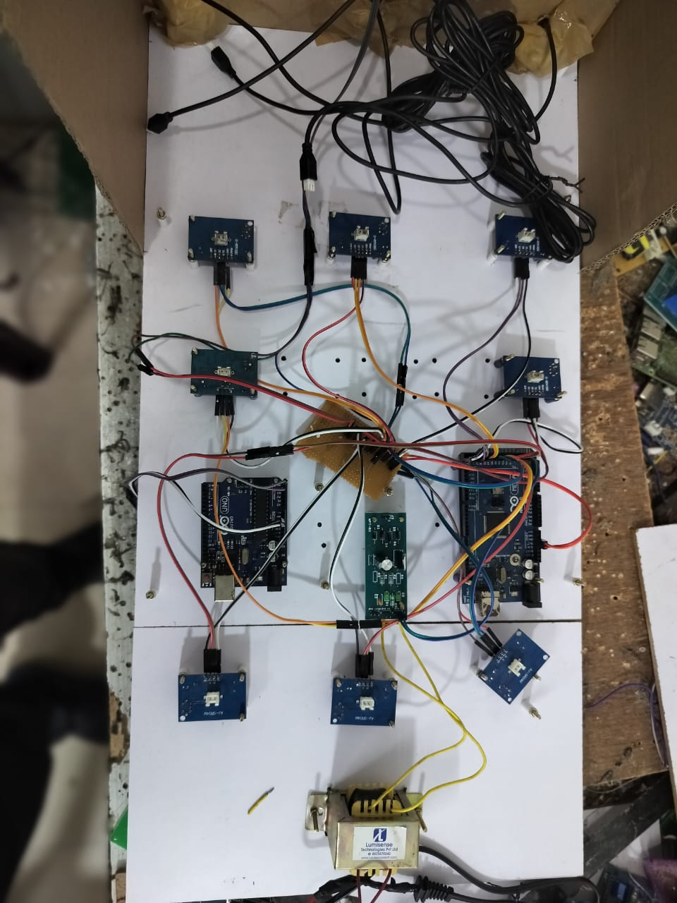
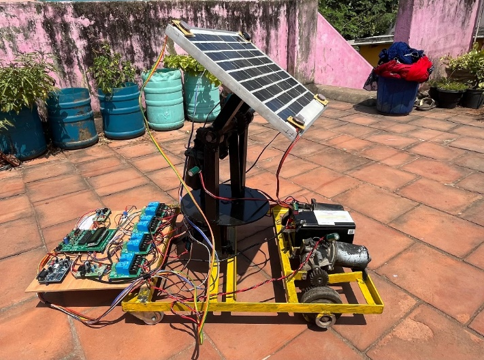
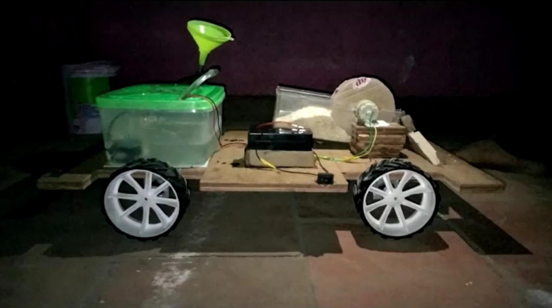

Define
Clarify the purpose, requirements, boundaries and assumptions.
Projects / 04
Selected work across industrial power design, safety systems, renewable-energy prototypes and remotely operated machinery.
01 / Featured project
A self-directed project developed to understand the full industrial electrical design lifecycle—from defining the system architecture through studies, documentation, procurement and commissioning requirements.
02 / Safety systems

Designed and tested a prototype monitoring system intended to reduce vehicle accidents in mountainous industrial environments. The system combines sensors with control logic to identify hazardous operating conditions.
03 / Renewable energy
Developed a dual-axis solar tracking system for an electric vehicle prototype. The rotating mechanism follows the sun’s position to improve solar-energy capture and utilisation throughout the day.

04 / Published project

Developed a remotely operated irrigator prototype combining mobile machinery, control electronics and an onboard solar energy source for agricultural use.
Project approach
Clarify the purpose, requirements, boundaries and assumptions.
Develop the architecture and select a practical technical approach.
Check calculations, simulate behaviour and test the prototype.
Record decisions, outputs, limitations and the next actions.
Continue exploring